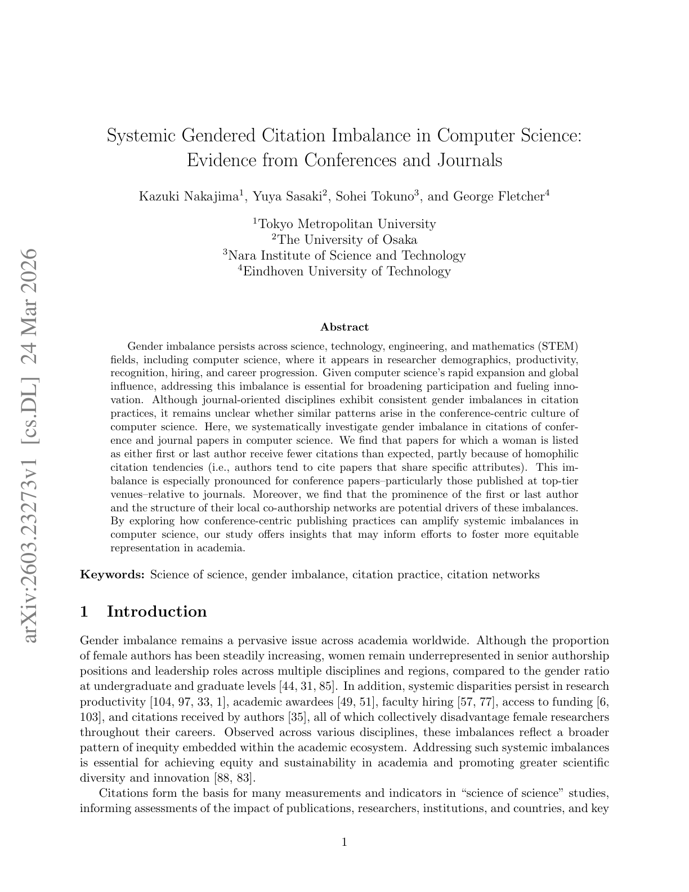

저자: Kazuki Nakajima, Yuya Sasaki, Sohei Tokuno, George Fletcher | 날짜: 2026-03-24 | Journal: arXiv preprint | DOI: N/A | arXiv: 2603.23273

Figure 1
컴퓨터과학의 컨퍼런스 중심 출판 문화는 성별 인용 불균형을 어떻게 증폭시키는가? 컴퓨터과학의 여성 제1저자/마지막 저자 논문은 기대치보다 인용이 적으며, 이는 동종선호(homophilic citation tendency) — 저자들이 자신과 유사한 특성을 공유하는 논문을 인용하려는 경향 — 에 부분적으로 기인한다. 이 불균형은 컨퍼런스 논문에서 특히 두드러지며, 특히 최상위 컨퍼런스에서 더 심하다. 저널 논문 대비 컨퍼런스 논문의 불균형이 더 크다는 발견은, 컴퓨터과학의 독특한 컨퍼런스 중심 문화가 성별 불균형을 구조적으로 강화한다는 새로운 통찰을 제공한다. 제1저자·마지막 저자의 명성(prominence)과 로컬 공저자 네트워크 구조도 불균형의 잠재적 동인으로 확인됐다.
Figure 1
Figure 1: 컴퓨터과학 컨퍼런스 vs. 저널에서 성별 인용 불균형의 측정 프레임워크
| 항목 | 점수 |
|---|---|
| Novelty | 4/5 |
| Technical Soundness | 4/5 |
| Significance | 4/5 |
| Clarity | 4/5 |
| Overall | 4/5 |
총평: 컴퓨터과학의 컨퍼런스 중심 문화가 성별 인용 불균형을 저널보다 심하게 증폭시킨다는 발견은 분야 특수성을 반영한 중요한 기여이며, 동종선호 메커니즘의 정량화는 형평성 정책 설계에 직접적 근거를 제공한다.